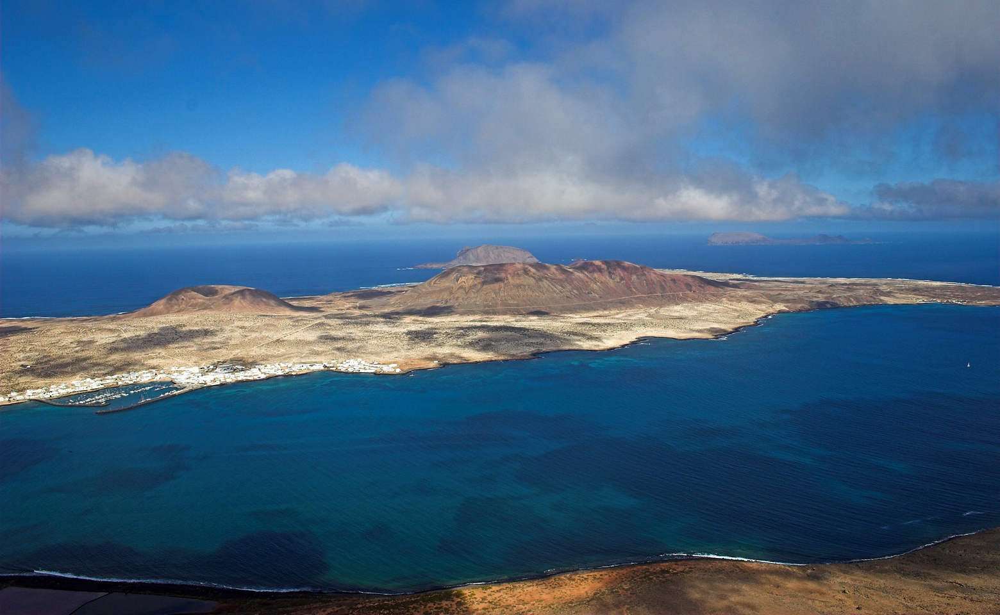
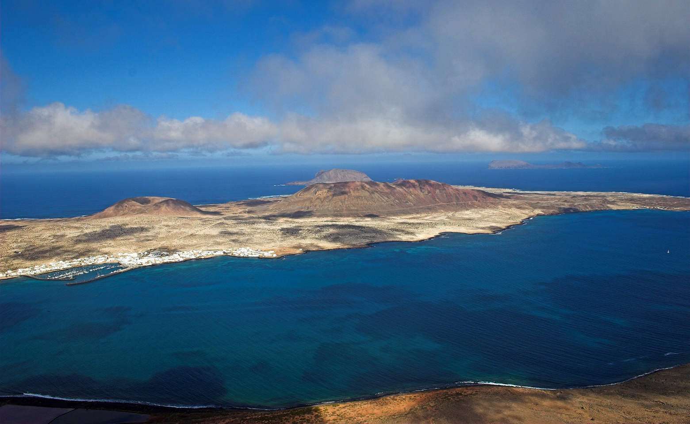

Book flights with:
üåü Lanzarote's Top 5 Highlights
- It has a secret lagoon with hidden gems
- I brought a gem back to my hotel but lost it
- Barceló Hotel IS AMAZING
- It's WAY TOO HOT
- I WENT UP TO THE TOP OF A DORMANT VOLCANO THERE
üé• Explore Lanzarote in Motion & Memories
Want to see what makes Lanzarote so incredible? Watch the video and browse through a few favorite snapshots from our trip. Whether it's volcanic craters, seaside towns, or that unforgettable hotel view — this place is a paradise!
 


From the vivid volcanic landscapes to the golden beaches, Lanzarote is a unique gem in the Canary Islands. Don't forget to explore Timanfaya National Park and try the island's fresh seafood dishes. It's truly a feast for your senses!